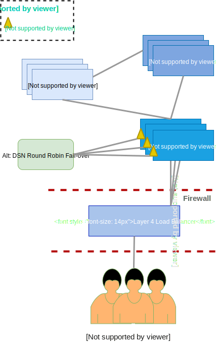

Mojaloop Deployment
Deployment and Setup Introduction
This document will provide guidelines to deploy and configure the Mojaloop applications on a local environment, utilizing Kubernetes within Docker.
1 Software List
Before proceeding, please have a look at Deployment Recommendations to insure the minimum resource requirements are available.
1.1 Deployment Recommendations
This provides environment resource recommendations with a view of the infrastructure architecture.
Resources Requirements:
Control Plane (i.e. Master Node)
```http request
https://kubernetes.io/docs/setup/cluster-large/#size-of-master-and-master-components
```
- 3x Master Nodes for future node scaling and HA (High Availability)
ETCd Plane:
```http request
https://coreos.com/etcd/docs/latest/op-guide/hardware.html
```
- 3x ETCd nodes for HA (High Availability)
Compute Plane (i.e. Worker Node):
TBC once load testing has been concluded. However the current general *recommended size:
- 3x Worker nodes, each being:
- 4x vCPUs, 16GB of RAM, and 40gb storage
*Note that this would also depend on your underlying infrastructure, and it does NOT include requirements for persistent volumes/storage.
- 3x Worker nodes, each being:

1.2 Local Deployment and Testing Tools
1.2 Local Deployment and Testing Tools
The tool set to be deployed as part of the deployment process.
| Tool | Required/Optional | Description | Install Info |
|---|---|---|---|
| Docker | Required |
Docker Engine and CLI Client Local Kubernetes single node cluster |
[https://docs.docker.com/install](https://docs.docker.com/install) |
| Kubectl | Required |
Kubernetes CLI for Kubernetes Management Note Docker installs this part of Kubernetes install |
[https://kubernetes.io/doc/tasks/tools/install-kuberctl](https://kubernetes.io/docs/tasks/tools/install-kubectl) Docker Kubernetes Install (as per this guide) Mac: `brew install kubernetes-cli` Ubuntu: `sudo snap install kubectl --classic` |
| Kubectx | Optional(useful tool) |
Kubernetes CLI for Kubernetes Context Management Helper Note Docker installs this as part of Kubernetes install |
[https://github.com/ahmetb/kubectx](https://github.com/ahmetb/kubectx) Mac: `brew install kubectx` Ubuntu: `sudo apt install kubectx` |
| Kubetail | Optional(useful tool) |
Bash script that enables you to aggregate (tail/follow) logs from multiple pods into one stream. This is the same as running `kubectl logs -f` but for multiple pods. Example usage `kubetail moja.* -n demo` |
https://github.com/johanhaleby/kubetail |
| Helm | Required |
Helm helps you manage Kubernetes applications Helm charts help you define, install and upgrade even the most complex Kubernetes application |
[https://docs.helm.sh/using_helm/#installing-helm](https://docs.helm.sh/using_helm/#installing-helm) Mac: `brew install kubernetes-helm` Ubuntu: `sudo snap install helm --classic` |
| Postman | Required | Postman is a Google Chrome application for the interacting with HTTP API's. It presents you with a friendly GUI for the construction requests and reading responces. | [https://www.getpostman.com/apps](https://www.getpostman.com/apps) |
This section will guide the reader through the deployment process to setup Kubernetes within Docker.
2.1 Kubernetes
If you are new to Kubernetes it is strongly recommended to familiarize yourself with Kubernetes. Kubernetes Concepts is a good place to start and will provide an overview.
The following are Kubernetes concepts used within the project. An understanding of these concepts is imperative before attempting the deployment;
- Deployment
- Pod
- ReplicaSets
- Service
- Ingress
- StatefulSet
- DaemonSet
- Ingress Controller
- ConfigMap
- Secret
2.1.1 Kubernetes Installation with Docker
Ubuntu
Note - Kubernetes with Docker is currently not available on Linux(Ubuntu) - please refer to; https://forums.docker.com/
We recommend installing a minikube local environment by follow the steps below;
With reference to https://kubernetes.io/docs/tasks/tools/install-minikube/
VT-x or AMD-v virtualization must be enabled in your computer’s BIOS. To check this on Linux run the following and verify the output is non-empty:
egrep --color 'vmx|svm' /proc/cpuinfoInstall a Hypervisor:
- KVM - Recommended Linux driver
or
kubectl should already be installed. To verify, check the version;
kubectl versionIf an error is returned, please refer to Local Deployment and Testing Tools.
minikube installation
curl -LO https://storage.googleapis.com/minikube/releases/latest/minikube-linux-amd64 && sudo install minikube-linux-amd64 /usr/local/bin/minikubeStart a cluster by running:
Note - if you have install KVM as the Hypervisor, you might need to include
--vm-driver=KVMin the startup command. The default is to startup with VirtualBox.minikube startOnce successfully started, you can interact with your cluster using kubectl, just like any other Kubernetes cluster.
Lunching the Minikube Dashboard
The minikube dashboard can be opened and access via your default browser.
minikube dashboardContinue from the Config Helm CLI and install Helm Tiller... section below.
Mac
To install Kubernetes with Docker, follow the steps below;
- Click on the Docker icon on the status barr
- Select Preferences
- Go to Advanced
- Increase the CPU allocation to at least 4
- Increase the Memory allocation to at least 8.0 GiB

- Go to Kubernetes
- Select Enable Kubernetes tick box
- Make sure Kubernetes is selected
- Click Apply
- Click Install on the confirmation tab.
- The option is available to wait for completion or run as a background task.

2.1.2 Kubernetes environment setup:
The following are all command line executables specifically for Mac. 1. List the current Kubernetes context;
kubectl config get-contexts
or
kubectx
Change your Contexts;
kubectl config use-contextsor
kubectx docker-for-desktopInstall Kubernetes Dashboard roles, services & deployment. (Alternative install for Dashboard using Helm: kubernetes-dashboard)
IMPORTANT: Always verify current kubernetes-dashboard yaml file for the below create command.
kubectl create -f https://raw.githubusercontent.com/kubernetes/dashboard/v1.10.1/src/deploy/recommended/kubernetes-dashboard.yamlVerify Kubernetes Dashboard;
kubectl get pod --namespace=kube-system |grep dashboardStart proxy for local UI in new terminal;
kubectl proxy uiOpen URI in default browser
http://localhost:8001/api/v1/namespaces/kube-system/services/https:kubernetes-dashboard:/proxy/#!/Select Token. Generate a token to use there by:
kubectl -n kube-system get secrets | grep dashboard-tokenThe token to use is shown on the last line of the output of that command.
kubectl -n kube-system describe secrets/kubernetes-dashboard-token-btbwfThe {kubernetes-dashboard-token-btbwf} is retrieved from the output in the previous step. For more information on generating the token, follow the Authentication link in the window.

Ubuntu continue from here
Config Helm CLI and install Helm Tiller on K8s cluster
helm initValidate Helm Tiller is up and running
kubectl -n kube-system get po | grep tillerAdd mojaloop repo to your Helm config (optional)
helm repo add mojaloop http://mojaloop.io/helm/repo/Add the incubator. This is needed to resolve Helm Chart dependencies required by Mojaloop charts
helm repo add incubator http://storage.googleapis.com/kubernetes-charts-incubatorUpdate helm repositories
helm repro updateInstall nginx-ingress for load balancing & external access
helm --namespace kube-public install stable/nginx-ingressAdd the following to your /ect/hosts
127.0.0.1 interop-switch.local central-kms.local forensic-logging-sidecar.local central-ledger.local central-end-user-registry.local central-directory.local central-hub.local central-settlements.local ml-api-adapter.localTest system health in your browser after installation
ml-api-adapter health test
```http request
___ central-ledger health test ```http request http://central-ledger/health
2.2 Helm
Please review Mojaloop Helm Chart to understand the relationships between the deployed Mojaloop helm charts.
2.2.1 Helm Chart Installation
This section will provide guidelines to delete, list, install and upgrade of the helm charts. For a comprehensive deployment documentation, please see Helm Chart Deployment
Lets start by listing the current helm charts deployed
helm listIf you would like to delete a deployed helm chart
helm del --purge mojaNote: for demo purposes we are using moja as the chart name. Please verify and use the correct chart name from the listing above.
To install Mojaloop chart(s)
Ubuntu - It might be required to execute
helm installandhelm upgradeundersudo.To install the full mojaloop project
helm install --namespace=demo --name=moja mojaloop/mojaloopAlternative directly from the repository:
helm install --namespace=demo --name=moja --repo=http://mojaloop.io/helm/repo mojaloopor install a specific mojaloop chart eg. Central-ledger
helm install --namespace=demo --name=moja mojaloop/centralledgerAlternative directly from the repository:
helm install --namespace=demo --name=moja --repo=http://mojaloop.io/helm/repo centralledgerTo upgrade Mojaloop chart(s)
Note: 'v5.1.1' is an example value.
helm upgrade moja --set central.centralledger.centralledger-services.containers.api.image.tag=v5.1.1-snapshot mojaloopTo upgrade a specific chart eg. Central-ledger
helm upgrade moja --set centralledger-services.containers.api.image.tag=v5.1.1-snapshot mojaloop/centralledger
2.3 Postman
Postman is used to send requests and receive responses.
2.3.1 Installing Postman
Please, follow these instructions: Get Postman
Alternatively on Ubuntu you may run:
wget https://dl.pstmn.io/download/latest/linux64 -O postman.tar.gz
sudo tar -xzf postman.tar.gz -C /opt
rm postman.tar.gz
sudo ln -s /opt/Postman/Postman /usr/bin/postman
2.3.1 Setup Postman
- Download this file https://raw.githubusercontent.com/mojaloop/postman/master/Mojaloop.postman_collection.json
- Open Postman
- Click Import and then Import File
- Select the Mojaloop.postman_collection.json file you downloaded
- You'll now need to import environment variables. For local testing, download this file https://raw.githubusercontent.com/mojaloop/postman/master/environments/MojaloopLocal.postman_environment.json
- Click Import and then Import File
- Select the MojaloopLocal.postman_environment.json file you downloaded
- In the imported collection, navigate to the central_ledger directory
2.4 Errors On Setup
`central-ledger’s server IP address could not be found.
ERR_NAME_NOT_RESOLVED`
Resolved by:
Verify that a helm chart(s) was installed by executing
helm listIf the helm charts are not listed, see the Helm Chart Installation section to install a chart.